地政学
サナアはイエメン高地の歴史的首都で、紅海、アデン湾、内陸山岳を結ぶ政治の焦点です。近年の支配と承認をめぐる対立は、空港、道路、行政窓口、燃料、物価を通じて住民の生活へ現れます。外交も生活に近いです。

🇾🇪 イエメン / 西アジア / World City Atlas
標高の高い盆地に築かれたイエメンの歴史的首都です。旧市街の塔状住宅、門、スーク、モスク、山岳交易、政治的緊張、水不足、家族の日常が同じ街路で重なります。
都市の骨格
サナアは海港ではなく、山岳高地の盆地に置かれた首都です。旧市街の塔状住宅、郊外へ伸びる道路、井戸と給水、宗教儀礼、戦時下の統治と家計が、標高の高い都市生活を形作っています。
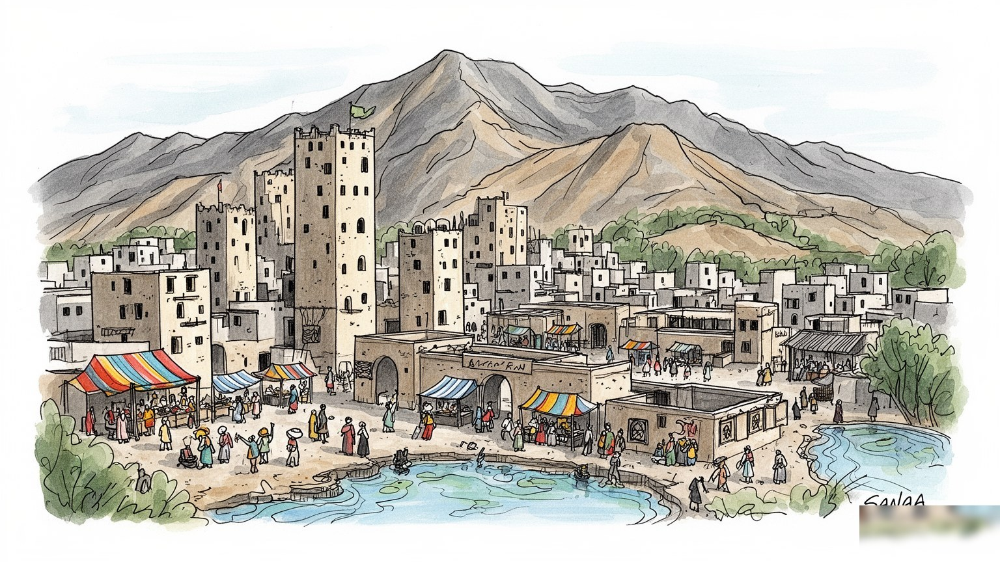
サナアはイエメン高地の歴史的首都で、紅海、アデン湾、内陸山岳を結ぶ政治の焦点です。近年の支配と承認をめぐる対立は、空港、道路、行政窓口、燃料、物価を通じて住民の生活へ現れます。外交も生活に近いです。
行政、卸売、小売、建設、修理、手工芸、交通、教育、医療、送金が雇用を支えます。給与遅配や物価高の下では、家族商店、露店、親族支援、国外送金が家計の安全網になります。路上の仕事も残ります。技も継ぎます。
モスク、マドラサ、中庭住宅、結婚式、ラマダン、金曜礼拝、ザイド派を含む信仰の記憶が都市の暦を作ります。宗教は観光の記号ではなく、家族、商売、学び、葬送を結ぶ生活の軸です。歌声も夜に静かに響きます。
訪問者は門や塔状住宅に目を奪われますが、住民には水、電力、燃料、医療、学校、通勤、家賃、治安が毎日の重みです。観光の魅力は、空き地のサッカーや路地の商いと一緒に読む必要があります。子どもも遊びます。
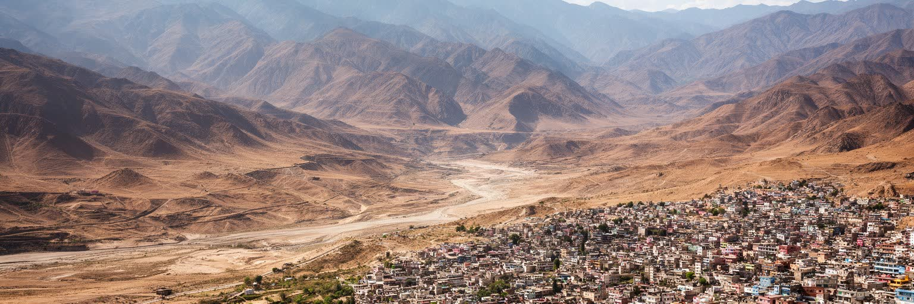
サナアは標高二千メートルを超える高地盆地に広がり、海沿いの都市とはまったく違う時間感覚を持ちます。朝晩は涼しく、日中の光は強く、雨は限られ、山並みが都市の輪郭を作ります。旧市街の塔状住宅や狭い路地は、乾いた高地の気候に合わせて日陰と風を調整してきました。盆地であることは防御と交易の利点を与えた一方、人口が増えるほど水、道路、住宅地の拡大に厳しい制約を与えます。古い城壁内だけでなく、周辺の斜面や平地へ住宅、工場、軍事施設、行政機能が伸び、都市は歴史地区と新しい郊外の連続体になりました。高地の地理は、物資の輸送費や燃料価格にも影響します。海港から届く食料や燃料は道路の安全と政治状況に左右され、閉塞や検問はすぐ市場価格に反映されます。サナアを読むには、旧市街の美しさだけでなく、山越えの道路、井戸、給水車、郊外住宅、斜面の建設を見る必要があります。地形は背景ではなく、政治、家計、建築、移動を決める現実の条件です。高地の涼しさは魅力ですが、水が乏しい盆地で都市が拡大するほど、その魅力は脆さと隣り合います。山が近いことは眺望であると同時に、道路の寸断や地区間の分断にもつながります。さらに盆地の外へ出るには峠道を越える必要があり、物流の遅れや燃料不足はすぐに市場と病院へ届きます。高地の都市は空に近いように見えて、実際には道路と水脈に強く縛られています。
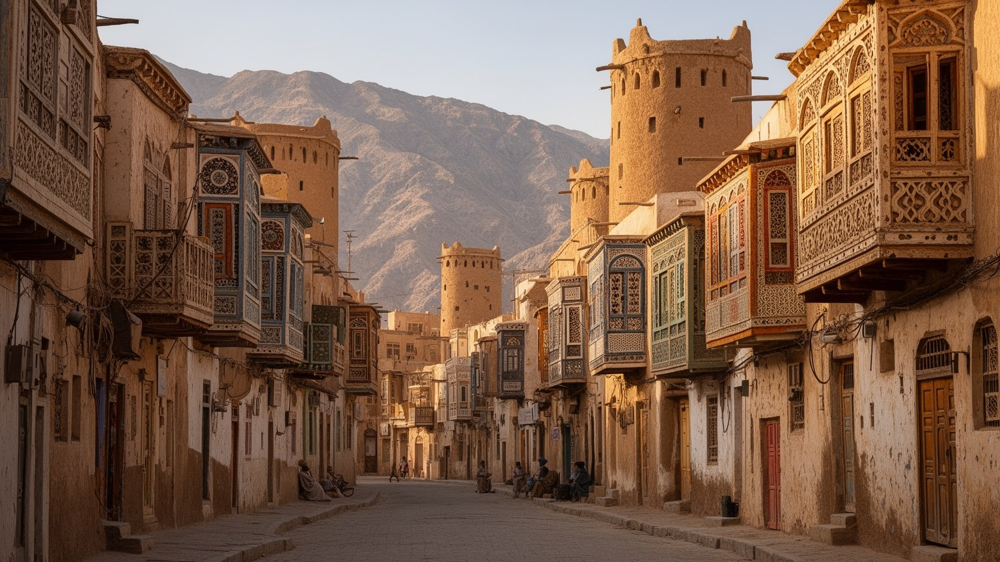
サナア旧市街の塔状住宅は、都市の最も強い記憶です。石の基礎、日干し煉瓦、白い石膏装飾、半円形の色ガラス窓、狭い街路、門、モスク、中庭は、単なる美しい景観ではなく、家族構造、気候、職人技、都市防衛、商業の必要から生まれました。上階には家族の私的な空間があり、下階には倉庫や店舗が置かれることもあります。窓の模様や壁の仕上げは、外から見る装飾であると同時に、光と風を調整する技術でもあります。遺産としての価値は建物単体より、住宅、スーク、モスク、浴場、井戸、路地が近距離で組み合わさる都市組織にあります。近年は空爆、雨害、老朽化、修理資材の不足、家計の悪化、所有権の複雑さが建物を傷めています。保存は外観を直すだけでは足りません。住民が家を使い続け、職人が技術を継ぎ、排水や防火を整え、子どもが安全に通れる路地を保つことが必要になります。観光客が感嘆する窓の連なりの背後には、修理費を工面する家族、崩れた壁を支える職人、雨季を心配する住民がいます。旧市街は博物館ではなく、生活と遺産が同じ壁の中で緊張する場所です。建物が空き家になるほど、景観は保たれても都市の息づかいは失われます。補修に使う土、石膏、木材、職人の手間は高くなり、若い世代が別の仕事へ移れば技術も細ります。遺産保護は建築の問題であると同時に、家計と技能継承の問題でもあります。
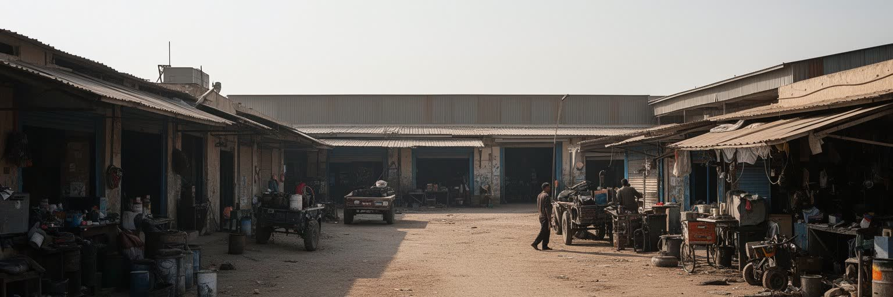
サナアはイエメンの歴史的首都として、官庁、サナア大学、病院、報道、軍事施設、宗教機関、商業の中心を抱えてきました。ただし近年の政治状況では、首都機能と国際的な承認、実際の統治、地域勢力の支配が単純には重なりません。誰が正統かを短く断じるより、制度が住民の生活にどう届いているかを見る必要があります。給与の支払い、身分証、学校、医療、燃料配給、通行許可、空港や道路の利用、援助物資の流れは、政治の抽象的な対立を日々の予定へ変えます。行政が集中する都市は仕事とサービスを集める一方、緊張と監視、攻撃の不安、物価上昇も引き受けます。地方から来る学生、患者、商人、避難してきた家族は、サナアを頼りにしながら、家賃や交通費の重さにも直面します。役所の窓口、検問、停電、燃料待ちの列、通貨の変動が、家庭の食事や通学に響きます。ラジオ、携帯電話、親族の連絡網は、道路や価格の情報を確かめる生活線です。サナアを読むには、旧市街の歴史だけでなく、制度がどこで止まり、どこで迂回され、誰が代わりに支えているのかを確認する必要があります。首都性は権威の建物より、暮らしの手続きに現れます。国際機関や援助団体の活動も、都市の政治性をさらに複雑にします。支援は命をつなぐ一方、配分、許可、移動の制約を通じて住民の選択を狭めることもあります。制度の近さは安心と圧力の両方をもたらします。
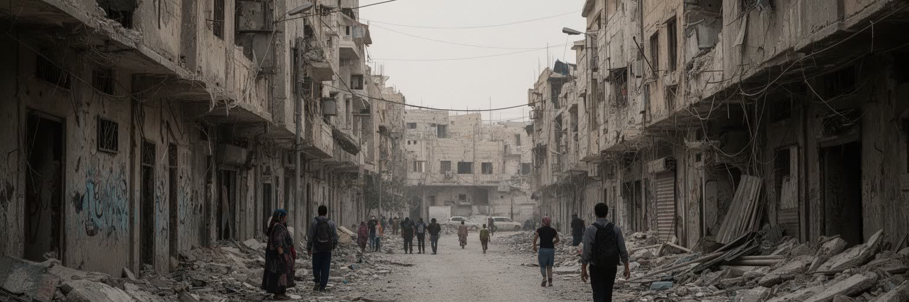
サナアの近年を理解するには、空爆、封鎖、内戦、政治的分裂、経済崩壊、避難の経験を避けられません。ただし都市を戦争の記号だけにしてしまうと、そこに暮らす人の普通の時間が見えなくなります。攻撃の記憶は、破壊された建物、修理された窓、空き地、失われた親族、夜の音への不安として残ります。学校や病院が機能しにくくなり、燃料や薬が不足し、家族は外出の時間や移動経路を慎重に選びます。国外へ出た親族からの送金、近所の助け合い、露店の商売、家の中の儀礼は、危機の中で生活を保つ方法になります。紛争を説明する言葉はしばしば陣営や軍事の動きに偏りますが、都市生活にとって重要なのは、水を得られるか、子どもが学校へ行けるか、病院へ届くか、家賃を払えるかです。ラジオのニュース、携帯の短い連絡、近所の噂は、夜の外出や市場へ行く判断を左右します。サナアを読む時は、被害を過小に見ず、同時に住民を受け身の被害者としてだけ描かない姿勢が必要になります。市場を開け、家を直し、行事を守り、学びを止めない人々の積み重ねが、都市の記憶を支えています。沈黙の多い記憶ほど、急いで単純な物語にせず、生活の細部から読む必要があります。避難して来た人と元から住む人の間には、家賃、仕事、支援をめぐる緊張も生まれます。それでも同じ路地で買い物をし、同じ水を待つ時間が、都市の新しい関係を少しずつ作ります。
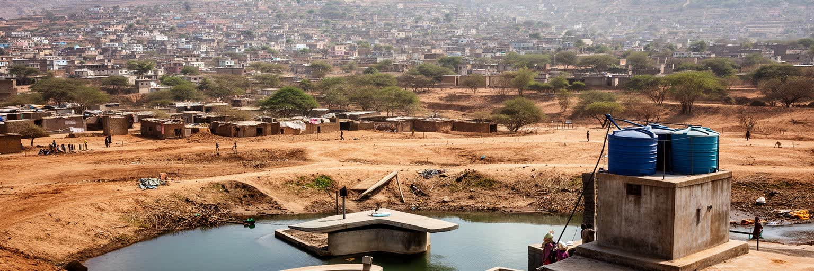
サナアの最も深い都市問題の一つは水です。高地盆地に人口が集中し、地下水への依存が強まり、降雨は限られ、配水網は老朽化と紛争で傷んでいます。水不足は環境問題である前に、家庭の時間と費用を変える生活の制約です。給水車を待つ、タンクを満たす、洗濯や入浴を後回しにする、飲み水を買う、井戸の水質を心配することが日常になります。貧しい世帯ほど水の単価が高くなりやすく、設備の弱い住宅ほど断水に弱いです。旧市街の建築は水を大切に使う都市文化を育ててきましたが、近代の人口増加と郊外化はその均衡を崩しました。農業用水、都市用水、軍事や工業の需要が競合し、地下水位の低下は将来の居住可能性まで左右します。水をめぐる不安は、衛生、学校、医療、女性や子どもの労働、家賃、食料価格とも結びつきます。都市の景観を守るにも、壁の修理や庭の維持、清掃には水が必要です。サナアを持続可能な都市として考えるなら、井戸をさらに深く掘るだけでは足りません。漏水の修理、節水、雨水利用、料金の公平性、地域ごとの配分、紛争下でも機能する公共サービスが必要になります。水は都市の限界を最も正直に示す指標であり、サナアの未来を測る基礎です。蛇口の不安は、政治より先に朝の台所へ届きます。水が足りない時、子どもの通学、女性の家事、病人の世話、店の営業はすべて調整を迫られます。水危機は大きな計画の問題であると同時に、一日の時間割を奪う問題でもあります。
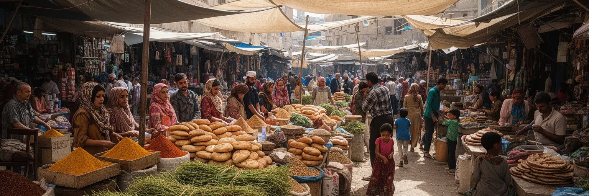
サナアのスークは、旧市街の観光的な魅力であると同時に、食料、香辛料、布、銀細工、ジャンビーヤの装飾、革、木工、日用品、修理の仕事を結ぶ生活経済の場です。狭い通路に店が連なり、店主、職人、荷運び、両替、露店、買い物客が細かな信用で結ばれます。高地の都市では、遠方から届く物資の価格が道路、燃料、通貨、治安に左右されるため、市場の値札は政治経済の変化をすぐ映します。シャフート、サルタ、パン、香辛料の匂い、午後のカートを囲む会話は、買い物を社交にも変えます。手工芸は都市の誇りですが、材料費の上昇、観光客の減少、若者の雇用不安、安価な輸入品との競争で難しい状況にあります。職人の技能は学校だけでなく、家族や工房で身体に覚え込まれます。工具の音、値段交渉、祈りの時間の静けさ、ラマダン前の買い出しは、スークを単なる売買の場ではなく、都市の社交空間にしています。経済危機の中では、家族が小さな店を出し、修理で物を長く使い、親族の信用で仕入れを保ちます。サナアの市場を読むことは、過去の交易の記憶だけでなく、今日の家計がどのように危機をしのぎ、技能がどのように残るかを見ることです。店の奥では帳簿、親族からの借り入れ、国外の家族との連絡が重なり、商売は現金だけでなく信頼で成り立ちます。スークは危機の中で都市が呼吸する場所でもあります。
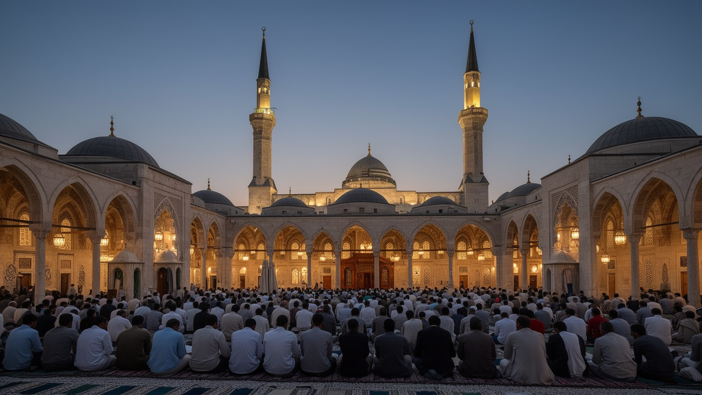
サナアの宗教生活は、モスクの建築や礼拝の回数だけでは説明できません。旧市街と周辺地区には、ザイド派を含むイスラムの学知、マドラサ、クルアーン学習、聖者の記憶、金曜礼拝、ラマダン、結婚式、葬儀、施し、家族の訪問が重なり、都市の暦を形作ります。宗教は政治と結びつく場面もありますが、日常では、誰を助けるか、どの家へ挨拶に行くか、商売をいつ閉めるか、子どもに何を学ばせるかという生活の規範として働きます。ラマダンやイードの夜には食卓と市場の時間が変わり、慎ましい歌や太鼓、親族訪問が家計に負担をかけながらも関係を結び直します。モスクは祈る場所であると同時に、情報、相談、寄付、教育、悲しみを受け止める場にもなります。紛争や経済危機は共同体の支援を重要にする一方、宗教的な言葉が対立を強めることもあります。サナアの信仰を読むには、単純な宗派説明ではなく、祈りがどのように食卓、商売、学校、葬送、近所づきあいへ広がるかを見る必要があります。都市の音は礼拝の呼びかけ、店の声、家族の会話でできています。信仰は観光の背景ではなく、生活を保つ時間の枠組みです。静かな祈りは、街を支える社会の約束でもあります。宗教施設が行う施しや相談は、公的サービスが弱い時に生活の支えになります。支援の届き方には偏りもあるため、信仰の場は安心と緊張の両方を抱えます。
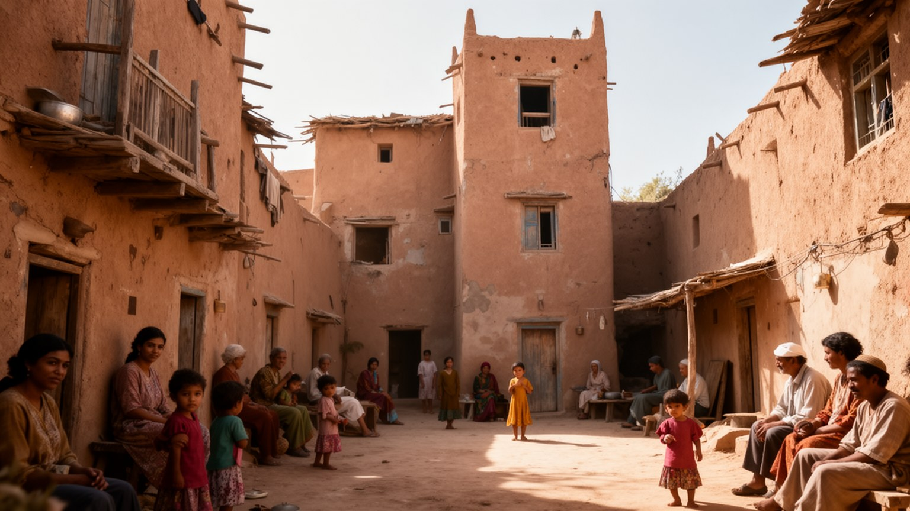
サナアの暮らしは、旧市街の塔状住宅、新しい集合住宅、郊外の密集地、避難してきた家族の住まいが重なっています。家は寝る場所であるだけでなく、親族を迎え、食事を分け、子どもを育て、女性が家事や在宅の仕事を担い、送金や商売の相談をする場です。経済危機の中では、複数世帯の同居や親族の支援が生活を支える一方、狭さ、家賃、プライバシー、衛生の不安も強まります。停電や断水があれば、料理、洗濯、勉強、介護の時間が変わります。学校へ行く交通費、医療費、燃料、通信費は家計を圧迫し、子どもや若者の将来を左右します。女性や子どもの負担は統計に表れにくいですが、水の管理、買い物、家族の世話、近所づきあいの多くを支えています。旧市街の家は美しくても、階段の多さや老朽化は高齢者や障害のある人に厳しいです。郊外の新しい住宅は広さを得る一方、交通や水の不安を抱えやすいです。サナアの日常を読むには、台所、屋上、水タンク、学校帰りの道、夜の停電、親族の訪問を見る必要があります。空き地のサッカー、屋上の夕涼み、茶を出す店、カートを囲む社交、結婚式の準備も生活の重要な場です。年長者の休息も大切です。物価が上がっても、客を迎え、少ない食材を分ける行為は、家族の尊厳とつながりを守ります。小さな安心を積み重ねることが、都市を動かす力になります。
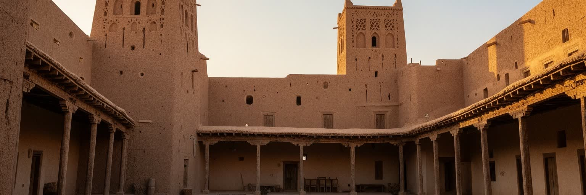
サナアの都市圏は、旧市街の城壁内だけでは完結しません。大学、病院、行政施設、市場、工場、住宅地、軍事施設、避難してきた人の住まいが郊外へ広がり、道路とミニバス、タクシー、徒歩が日常をつないでいます。高地の盆地では道路の混雑と燃料価格が生活時間を大きく左右します。検問や治安状況、空港の利用制限、幹線道路の安全は、通勤だけでなく、病院へ行く、親族を訪ねる、物資を仕入れる、学校へ通うという基本的な移動に影響します。郊外化は中心部の過密を和らげる一方、水や電力、排水、公共交通、学校の不足を新しい地区へ持ち込みます。土地利用が無秩序に広がると、農地や水源の保全も難しくなります。都市の外縁には、計画された住宅と非公式な建設、商業施設、工房、避難世帯の仮住まいが混在します。サナアを読むには、旧市街から郊外へ出る移動そのものを観察する必要があります。どの道が使えるか、どこで車が止まるか、誰が運賃を払えないかが、都市の社会地図を作ります。道路は便利な線であると同時に、政治、燃料、治安、水不足の影響を受ける脆い生活線でもあります。郊外へ伸びる都市は、広がるほど中心とのつながりを維持する費用を増やします。移動の負担は、貧しい世帯ほど重くなります。病院へ向かう車、学校へ急ぐ子ども、仕入れの荷物を運ぶ商人は、同じ道路の不安を共有します。移動の安定は都市の安心を支えます。
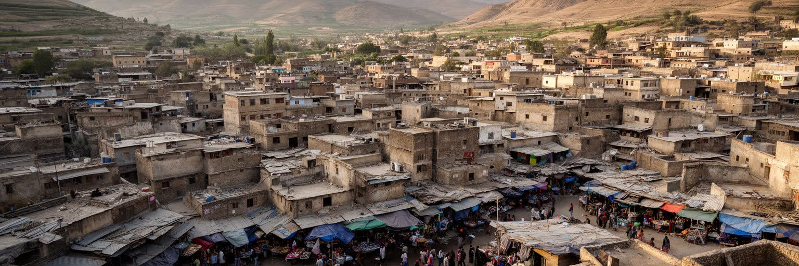
サナアを世界の都市地図に置く時、旧市街の美しさだけを切り出すと都市の核心を見失います。塔状住宅、白い装飾窓、門、モスク、スークは確かに強い魅力を持ちますが、その背後には高地盆地の水不足、首都機能の緊張、内戦による破壊、物価高、避難、家族の支援、職人の技能、宗教儀礼が重なっています。経済規模を示す統計は限られ、紛争下では数字だけで都市の力を測ることも難しいです。それでもサナアが重要なのは、山岳アラビアの歴史的都市構造、イスラムの学知と儀礼、家族単位の生活、政治的対立、水危機が同じ街路で交わるからです。訪れる人は旧市街の景観に惹かれますが、そこを維持するのは、壁を直す職人、店を開ける商人、水を確保する家庭、学校へ向かう子ども、年長者を支える家族、遠くから送金する親族です。サナアを読むことは、遺産を過去の名残として眺めることではなく、危機の中で都市がどう使われているかを見ることです。水、住まい、移動、信仰、市場、記憶を重ねると、この都市は単なる古都ではなく、現代の都市が直面する脆さと持続の問題を鮮明に映す場所になります。美しさと困難を分けずに見ることが、サナアへの最も誠実な入口です。都市の価値は、残された景観だけでなく、そこに暮らす人の時間に宿ります。門の外へ広がる郊外、給水を待つ列、静かな祈り、修理を続ける手まで視野に入れると、サナアは過去の都市ではなく、現在の都市として立ち上がります。